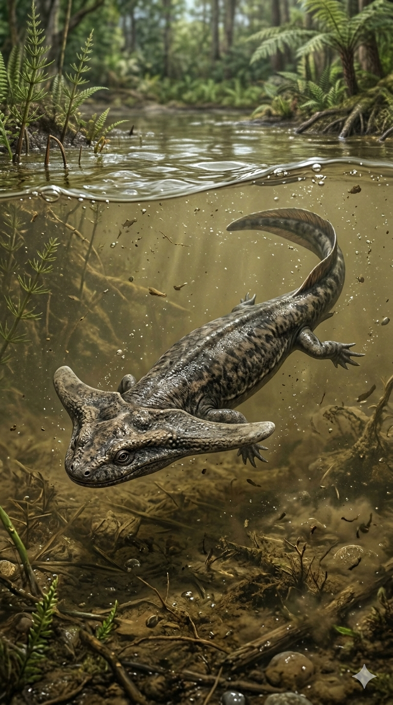
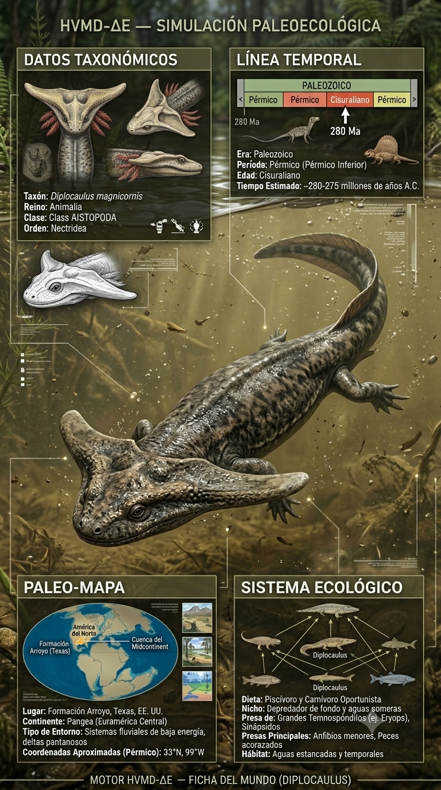
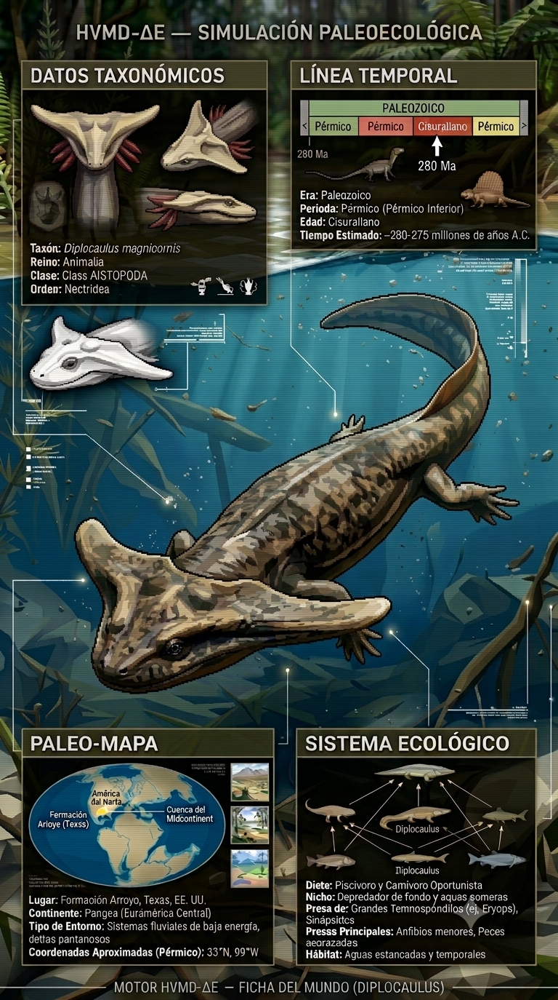
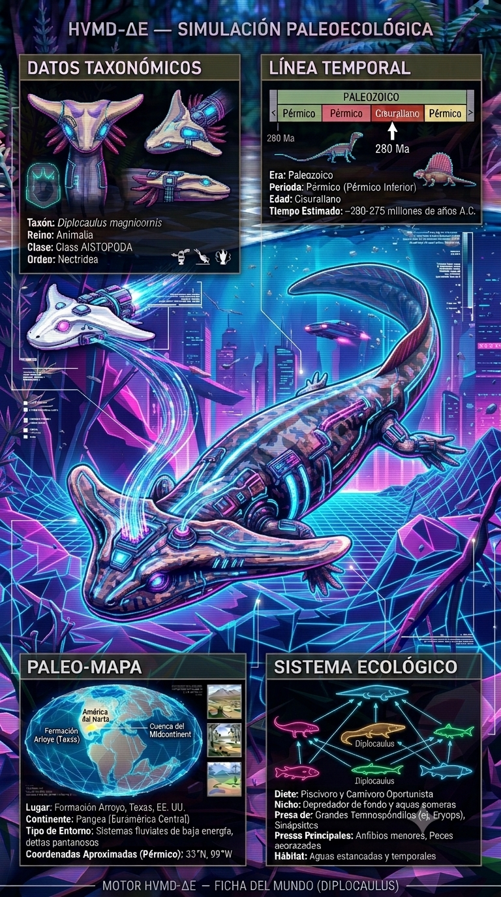

Paleoficha de Diplocaulus




Periodo: Pérmico Inferior
Edad: Hace entre 290 y 280 millones de años.
Dieta: Piscívoro y depredador de pequeños invertebrados acuáticos.
Distribución: Formación Arroyo, Texas (Norteamérica).
TAXÓN:
Diplocaulus magnicornis
CLADO: Nectridea (orden de anfibios lepospóndilos)
DIETA: Piscívoro y depredador de pequeños invertebrados acuáticos
TAMAÑO: Hasta 1 metro de longitud
LOCOMOCIÓN: Semiacuática; cuerpo aplanado con gran cráneo en forma de bumerán.
TIEMPO:
Pérmico Inferior (Artinskiense), aproximadamente entre 290 y 280 millones de años.
GEOGRAFÍA:
Formación Arroyo, Texas (Norteamérica). Cuencas de tierras bajas de Euramérica. Ambiente paleoecológico formado por sistemas fluviales de meandros y estanques estacionales.
ECOLOGÍA:
Bosques de helechos arborescentes y licófitos en las zonas de inundación. Compartía su ecosistema con Eryops, Dimetrodon y peces cartilaginosos. Habitaba el fondo de cuerpos de agua dulce, utilizando su característico cráneo para mejorar la sustentación hidrodinámica. Era presa potencial de grandes depredadores como Eryops.
CLIMA:
Wm3 (Húmedo). Condiciones cálidas con variaciones estacionales en el nivel del agua.
ESTADO ECOLÓGICO:
Estable. Uno de los anfibios más reconocibles del Paleozoico, altamente adaptado a la vida en los sedimentos de los sistemas fluviales.
Vídeo PalEntropía:
▶ Ver Short en YouTube